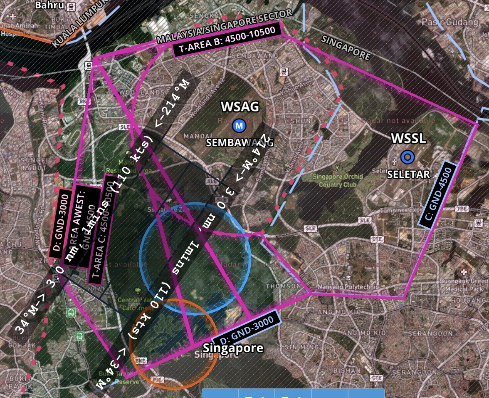
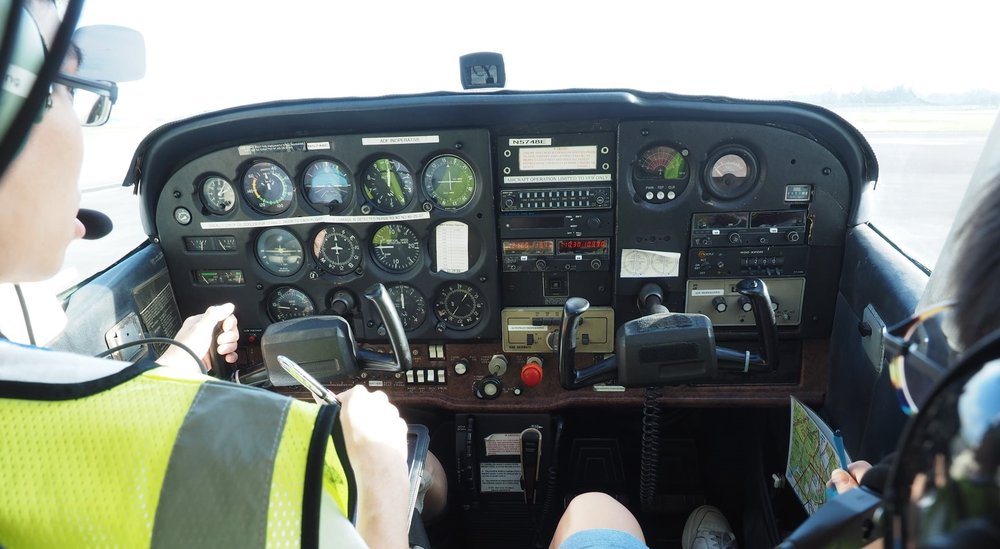

I get a lot of flight requests from friends ever since I got my PPL last year, on average once every other week. At the same time, I have questions posed to me on the safety and environmental concerns of General Aviation (GA) within Singapore. Some questions were posed to me in shall I say, “less than respectful” tone.
Let’s put things in perspective, the following is what I sometimes tell my potential passengers to mentally prepare for and be aware of what they are up against before agreeing to fly with me.
If you want to fly with me, throw out what you know of a flight based on your airline experience. This is no luxurious private jet.
Compared to any airliner you have sat in, this plane compartment has the most cramped seats. It’s so hot that you can get dehydrated at the end. The plane is noisy enough that it can deafen you in the long term without ear protection.
This plane like most GA piston aircraft worldwide, runs on leaded fuel which has been banned in Singaporean cars for decades. Obviously, it’ll take a lot more energy to put a plane up in the air than move a ground vehicle so expect to make a stronger contribution to global warming than a car trip.
Yours truly is the most inexperienced pilot in command you will probably ever have too. This indirectly leads to this being the statistically most dangerous flight of your life. To top it off, the cost I ask you to contribute will make this the most expensive seat you’ll pay for the distance travelled.
So do you still want to come?
The above points actually caused some people to back out as they could not accept the risk they need to take or they don’t wish to endure the discomfort. At the same time, some people have raised safety and environmental concerns with me with words like, “reckless low-altitude flying” and “environmental hypocrite” being the more extreme examples.
No surprise given that GA is pretty much unheard of in the Singaporean context and therefore quite misunderstood by not a small group of people. So thought to address some of these concerns here with facts.
Safety
What happens if the engine fails midair? Furthermore you fly so low at 2000+feet, is it safe?
I get a lot of engine failure questions. Engine failures are rare but they do happen. This study quoted here says 13 failures per 100000 hours. If they do happen, the plane does not fall out of the sky. It just becomes a glider but it still has to go down eventually.
All pilots are trained to handle this situation during their student pilot days. We have to get the plane to a glide speed to maximise glide distance, head to the nearest suitable airport or landing site and make an emergency radio call.
In fact, I do occasionally practice this emergency manuever which is called Practice Forced Landing (PFL) where I simulate an engine failure and glide to a landing. Here is one example:
Jump to 58:22 to 1:03:20. Note this does not meet the CAAS test standard of landing by the first or second runway stripe.
The Cessna 172N has an approximate glide ratio of 9:1. So at a starting altitude of 2000 feet, it can glide for about 18000 feet (5.5 km) before hitting the ground.
5.5km drawn above to give the sense of scale.
Given the size of the training area, 5.5km should be sufficient distance to reach Seletar Airport or Sembawang Airbase which is below the training area I usually fly at.
If I’m doing training manuevers like stalls, I won’t conduct them at 2000 feet. Probably 4000 feet or higher to give some altitude buffer.
Then why you tell passengers you’ll land on the highway or ditch in the water just before takeoff? Can you guarantee you won’t crash into something or kill someone in an emergency landing given the population density of SG?
Probably referring to these videos:
7 Sept 2019: Takeoff abort plan of landing on highway for Runway 21 takeoff
21 Mar 2020: Takeoff abort plan of ditching in the water for Runway 03 takeoff
Note that I don’t share this to every passenger. It’s only if the passenger is a pilot or a potential student pilot.
Takeoff is a critical phase of flight at a low altitude means pretty much not much gliding distance is available if the engine fails. So I was trained to just pick a suitable landing spot somewhere in front of the runway.
No pilot even airline pilots can ever make property or life guarantees in an emergency. We can only train for it regularly and do our best if it happens. After all, our lives are on the line too.
Is it safe to use a plane >40 years old with instruments that look like those from WW2? If not, why our local airlines keep emphasising their young fleet with glass instrumentation if not for safety reasons?
40-year-old planes are relatively common in GA. Read here for possible reasons.
Planes young or old are inspected regularly at the minimum annually. Read here for more info.
The 2x Cessna 172N used in Seletar Flying Club use the traditional steam gauges only.
An example of a modern glass cockpit using slick computer screens in the Diamond DA-40 from Wings Over Asia.
Glass instrumentation is very expensive. These systems alone can sometimes cost more than the existing value of the plane. Glass instrumentation while nice to have, the old steam gauges are still sufficient and reliable enough.
Airlines like to fly newer planes primarily for fuel efficiency reasons. Another factor is the cost of maintenance. Long story short, the older a plane gets, it may be more expensive to maintain or overhaul it hence it may be more economical for airlines to buy new planes and scrap the old ones.
Airliners are mostly pressurised which increase airframe stresses and limits the number of landing cycles they can do in their lifetimes. Most GA piston planes are unpressurised hence their airframes can be used for decades with no problems.
Not to say old planes are 100% safe, I mean there is more to an aircraft safety than just its age.
The airlines all use 2 pilots because of redundancy even though I read that one pilot can technically do everything. Isn’t it unsafe then to fly single-pilot? What happens if you get a heart attack or be incapacitated?
Well first, most jet airliners are certified for 2-pilot operation as not all the controls can be reached by any one pilot or the operational complexity needs 2 people at certain sections of the flight. It means those planes cannot be legally operated with just one pilot for the entire flight.
But in an emergency, those jets can still be landed safely by just one qualified pilot. Possible does not mean optimal though.
Pilots even private ones like myself require regular medical checkups. My FAA Class 3 needs a checkup every 5 years since I’m under 40 years old. CAAS private pilots need a Class 2 medical which also last 5 years under 30 years old.
Having said that, 2x pilots definitely increases the safety margin as we do hear sometimes of pilots being incapacitated just by Googling. However, those incidents are rare lah. If we want to cater for this rare possibility, we should start with cars by having two sets of steering wheels and pedals.
There are some interesting innovation in this area. Take a look at this Garmin Autoland System.
Right now only available on select new plane models and very expensive. But I think it’s a nice technology to reassure passengers if something happens to the pilot.
Don’t commercial airlines all fly with instruments and ATC, isn’t it risky that that you fly just by looking outside? At the speed planes go, can you spot another plane fast enough to avoid collision? What happens if you end up in the clouds?
What I’m doing is called flying by Visual Flight Rules (VFR) which all pilots in the world start with their initial private pilot license. This means I’m responsible for separation.
At the altitudes up to 10000 feet piston planes usually fly in, fast-jets are seldom there so the others are piston planes or turboprops which are relatively slow. These planes are still spottable at a safe distance although my instructors say I need to improve in this area.
It’s illegal for me to deliberately enter the clouds as I don’t have an Instrument Rating. If I inadvertently end up in the clouds, I’ll try to get out ASAP. So that won’t be a problem.
So your plane does not have (or don’t use) ILS, TCAS, GPWS, autopilot, weather radar, black box etc? Why not? Don’t these equipment help increase safety if not the airliners wouldn’t have installed them?
First, explanation of the acronyms:
- ILS: Instrument Landing System to land in poor visibility. Only instrumented-rated pilots can use this.
- TCAS: Traffic Collision Avoidance System. Alerts pilots of nearby planes based on distance detection of transponders in other aircraft
- GPWS: Ground Proximity Warning System. Warn pilots if plane is too close to terrain
- Autopilot: Helps to fly preset course, speed and altitude. Not a pilot-replacement.
- Weather Radar: Help to determine the weather in front of the plane.
- Black box: Not actually black. Orange boxes to store flight data and cockpit audio for investigation in an accident.
Seletar does not have ILS due to a dispute with Malaysia. So all planes even the larger private jets and airliners visually land there.
TCAS, GPWS: Not really necessary as I’m flying in VFR conditions where I can spot other planes and terrain.
Autopilot: It only helps if we are flying long distance cross country flights. For short distances like in the training area, it does not make sense to use it. The plane will have to change course the moment the pilot finishes setting up the autopilot for one leg of the flight.
Weather radar: It matters more for very long flights where a weather forecast is less accurate the further you try to predict. For short flights by piston planes, it’s sufficient to check the forecast as all pilots whether private or airlines are trained to do.
Black box: Black boxes are only legally required on planes above a certain size or carry more than certain number of passengers. Besides, a blackbox needs many digital sensors which these tiny planes do not have in the first place.
More safety equipment does not necessarily mean better. The safety benefits have to be measured carefully against the costs and weight of adding and maintaining these equipment. As much as we like to imagine safety is priceless, the economic and physics limitation is just as important. Add so much weight, the plane won’t even takeoff!
To go to the other extreme, why not ask why every civilian plane does not have an ejection seat for every passenger then? In the case of small planes, this economic safety calculation was done and I trust that calculation.
The pilot has to be trained to use all the safety equipment and hence the complexity increases to the point where 2x pilots are needed to operate all these safely.
Environmental Concerns
Some environmentally-conscious people have raised these concerns with me. Perfectly valid so let me try to address them.
How much Co2 does each flight emit?
It’s possible to determine this. Let’s look at the Pilot’s Operating Handbook for the Cessna 172N.
This page shows the fuel consumption at different altitudes and power settings. The worst case is 8.6 gallons/hour which is about 32 liters/hour. To convert this to CO2, we use a CO2 Emission Coefficient obtainable from this site.
Avgas has a CO2 emission Coefficient of 8.35kg/gallon. So a one hour flight produces
8.6 * 8.35 = 71.81kg of CO2.
To put things in perspective, let’s compare it to a car. Let me use the Honda Civic, a popular car model sold in Singapore.
It has an average CO2 emission of 0.135kg/km based on Honda’s website.
To generate the same amount of CO2, the Honda Civic has to be driven for
71.81kg / 0.135kg/km = 531.9km.
The average annual mileage of a Singaporean car is 17500km. So one hour of flying is roughly equal to
531.9/17500 * 365 = 11.1 days of average driving habits
I actually didn’t know about this before till I did this calculation. Still, I don’t fly very regularly and I use public transport most of the time. I hope it can help offset things somewhat.
If I have a choice, I will fly a battery or hydrogen powered aircraft but the technology is still not good enough for widespread economical use yet.
Leaded Fuel
This point came up because of this photo.

Someone saw the label on the truck wrote Avgas 100LL, googled it, realised it stands for “low-lead” and complained to me about it. Saying leaded petrol was phased out in Singapore since 1998. How come this plane is using it?
Avgas 100 and Avgas 100LL are the most common fuels used in piston-engine planes. The LL version actually has less lead 0.56g/l than the non-LL version at 1.12g/l.
The lead helps to improve the octane performance of the fuel allowing the fuel to compress more before igniting. This helps to increase engine performance which airplanes need as much as possible.
There are many complaints worldwide about GA planes using this and people want to move to other safer alternatives. I also agree lead isn’t good but this is the present technology this planes run on. Some planes like Piper Archer DX uses unleaded fuel like diesel or Jet-A.
I personally do hope to move away from leaded fuel or even better, no fossil fuels altogether.
Noise pollution
Given the small size of Singapore, it is inevitable that noise from the airport will spill over to residential areas. Unlike Changi which is situated at the Eastern corner of SG, Seletar Airport is not in a great place among the housing estates.
To address the issue of noise, CAAS has set down noise abatement regulations as shown above. Aircraft are not supposed to fly below certain altitudes above certain areas which are the housing estates.
To alleviate the problem of noise, no flights are permitted between 1400-2300 (UTC) (2200 - 0700 local time), other than MEDEVAC and emergency flights.
Additional regulations are also imposed to reduce night flights at Seletar Airport.
In the training area, I keep to 2000 feet or more at all times to not buzz the housing estates below.
Conclusion
I noticed that many questions involve comparison to airliners as that is the typical perception of flying among Singaporeans. Not every comparison should be made directly between a tiny piston GA aircraft to large airliner as they have different purposes. One step at a time, I can help enlighten people that flying is not just about the airlines and military.
Given that I share my flying experiences in public blog posts and videos so liberally, I’m not surprised to attract occasional detractors. I actually prefer that people ask me rather than bottling things up and making wrong assumptions till one day they make uncivil comments. The best I can do is educate the misinformed but they have to surface their doubts in the first place.
For the vast majority of you, I hope this blog post can help to address some of the common and unasked questions you may have. I also gained a lot of knowledge from compiling this FAQ.


{kind=link}
{kind=link}
{kind=link}
{kind=link}
{kind=link}